PaiCLI 编码技术检查报告
生成时间：2026-10-03T06:44:34；版本范围：本工作区未提交实现。实际进展与命令以唯一实施记录为准。
本报告区分技术证据、业务结果和用户接受。页面采用受控接口fixture，真实MySQL、Runner、供应商、微信、MCP及正式评测尚未联机验收；业务通过数为0，用户接受未记录。技术测试及截图不能证明已经上线或可以发布。
最终源码定向复验与可执行包
构建在固定用户home私有源码快照中执行，产物复制到各模块target；聚合快照仅排除中心API，868项源码清单摘要与工作区一致。各次定向运行范围不同，不能相加成一次完整回归；沿用基线和原失败仍在下表及实施记录保留。
| 检查 | 测试数 | 失败 | 错误 | 跳过 | 可证明范围 |
|---|
| Core传输与预算 | 31 | 0 | 0 | 6 | Budget3、协议5、STDIO11、HTTP12；6项为原Windows shell跳过 |
| Runner收口基线 | 83 | 0 | 1 | 0 | 1项JGit DOS只读临时文件清理错误；其余断言通过，原错误保留 |
| Runner清理定向复验 | 13 | 0 | 0 | 0 | Native7、托管MCP6；仅处理自身临时fixture的DOS只读清理 |
| CLI导出、补全与渲染 | 32 | 0 | 0 | 1 | Exporter11、Completion3、Inline18；原符号链接跳过保留 |
| Core图片与协议最后复验 | 31 | 0 | 0 | 0 | 图片16、图片引用解析10、MCP协议5；旧随机PNG fixture首失败日志保留 |
| Runner执行边界最后复验 | 35 | 0 | 0 | 0 | 托管MCP6、Native7、边界22；包含同模型编号重用consume幂等响应回归 |
| Harness报告位置复验 | 4 | 0 | 0 | 0 | 原算法及三份报告保留；派生报告写批准状态目录，不隐式写工作区 |
| Eval最后相关复验 | 9 | 1 | 0 | 0 | D3七项与valid LF generator通过；forbiddenRead因Windows chmod未撤销NTFS读取仍失败 |
| 图片调用方补验 | 31 | 0 | 0 | 0 | 模型图片wire18、McpClient13；旧hello冒充PNG技术fixture首失败日志保留，production未改变 |
| MCP异常完整证据链最后复验 | 17 | 0 | 0 | 0 | JsonRpc2、ManagedMCP7、Native8；真实多块证据已私有保存，0receipt、CONSUMED仍待对账。旧整个error无正文断言与内部data冲突，首失败保留。 |
- MCP异常链补修后的Core、Runner、CLI、独立Eval重包06:37:45 BUILD SUCCESS；打包跳过测试，测试结果另列。
- 新CLI与Eval --help、SPI编译及实际加载、thin worker EOF入口均exit0；无真实账号或业务请求。
- CLI实际加载Harness、微信、项目记忆三个Extension及中心Gateway；独立Eval不并入CLI。
- 自身类字节码major61/release17；快照生产class与jar逐byte一致，实际运行JDK21。
- 五个旧jar已备份，再复制最终新jar到工作区各模块target，SHA-256与构建产物5/5一致；868项源码/POM/benchmarks清单0差异。
最终原生检查、日志和摘要 · 可执行包SHA-256及装配证据；测试和运行使用JDK21，目标字节码Java17，实际Java17运行时尚未复验。
原工作区保存的Java技术报告
下表汇总原工作区各模块保存的Surefire XML，包含不同时间的完整回归和定向复验，不包括独立最终快照报告，并非一次完整执行。运行范围、原失败、修复后复验和未执行项由实施记录解释，不能以这些计数代替完整业务通过数。若仍有失败或尚无报告，保留该事实。
| 模块 | 保存测试数 | 失败 | 错误 | 跳过 | 报告状态 |
|---|
| paicli-core | 878 | 0 | 0 | 4 | 保存报告无失败 |
| paicli-runner | 48 | 0 | 0 | 0 | 保存报告无失败 |
| paicli-cli | 332 | 0 | 0 | 1 | 保存报告无失败 |
| paicli-eval | 1213 | 122 | 537 | 76 | 未通过 |
| paicli-api | 75 | 0 | 0 | 0 | 保存报告无失败 |
页面实际检查
本报告展示的13张截图保存后均已回读。共享全局样式、中文组件与权限指令实际装配；外层生产若依Layout和菜单授权不在此fixture的验收范围。初次全局样式修复基线保留于本目录子目录，当前图为受影响项复验后的证据。
历史页首次观察到部分写按钮未禁用，该失败事实保留；复验覆盖了首次截图，原失败图缺失，不能声称该原图已保存。当前历史两图仅证明修复后表现，详情见页面清单。
1. 编码工作台
沿用基线：合法模型、会话状态与事件游标。
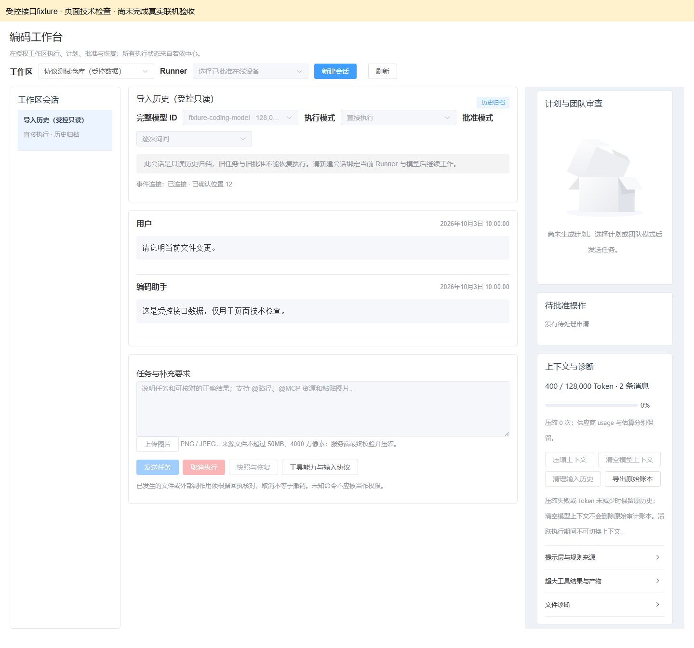
2. 发送后的排队反馈
沿用基线：请求携版本和幂等键；排队后禁重复发送。
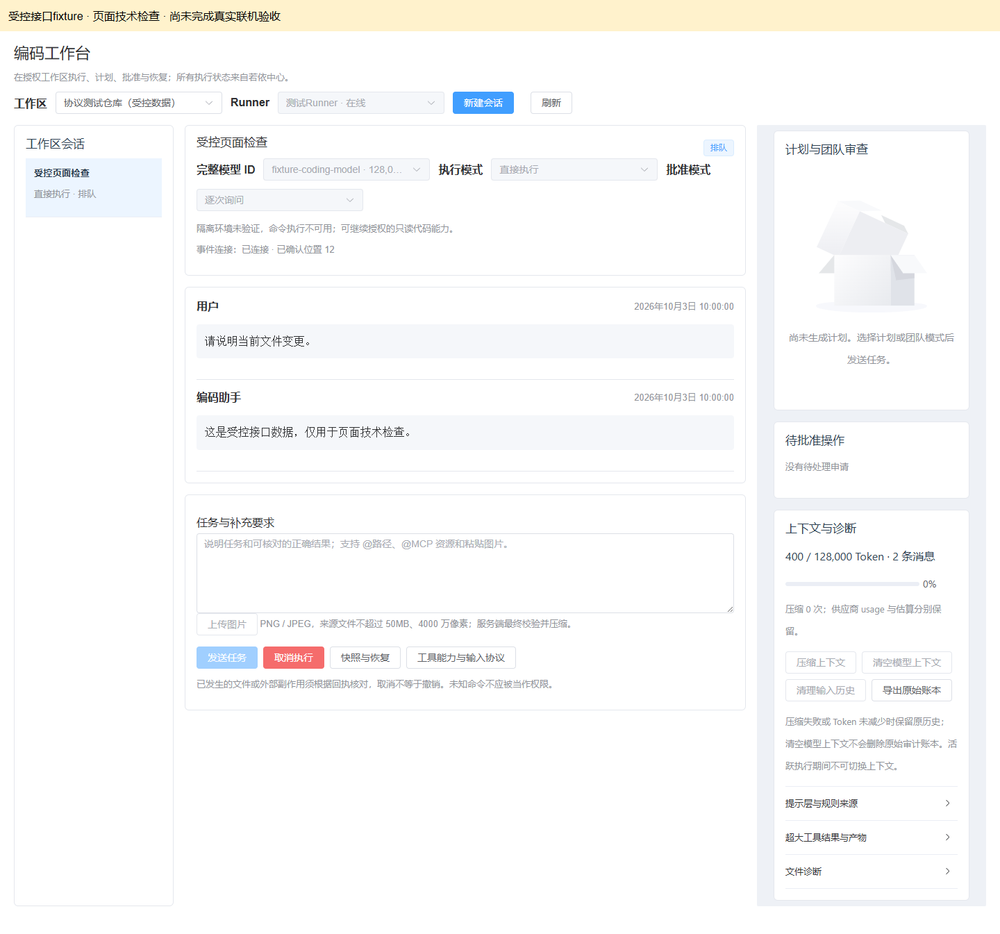
3. 后台任务
沿用基线：待核对保留，未显示为重新执行或已撤销。
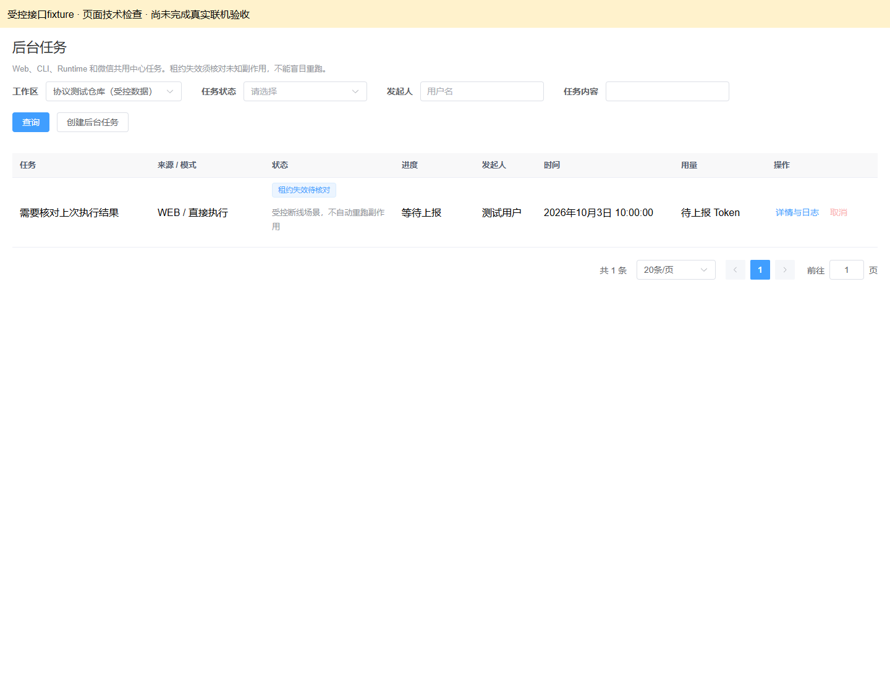
4. 长期记忆
本次受影响项复验：已核实与待核实及作用范围，中文来源。
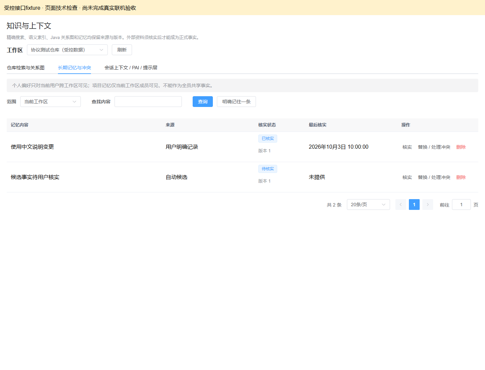
5. 供应商与完整模型
本次受影响项复验：完整模型ID、能力和密钥未配置状态；未触发真实模型刷新。
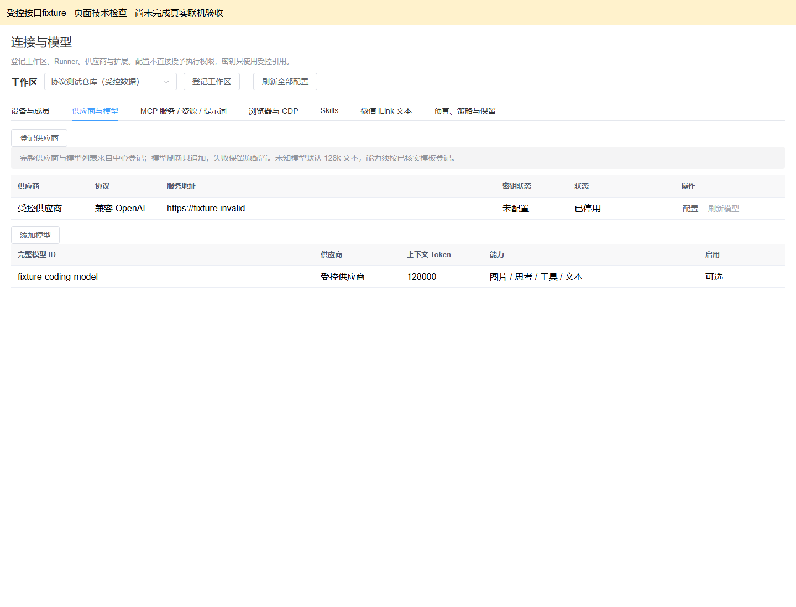
6. 审计与评测
沿用基线：空评测没有虚构成绩。
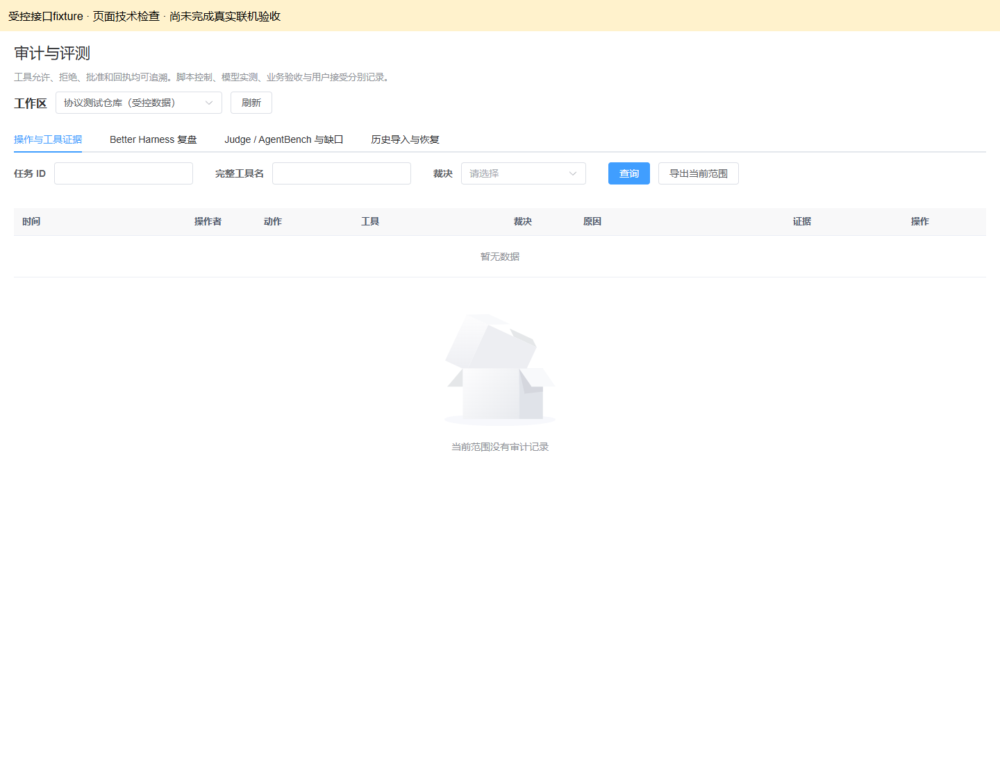
7. 1024像素布局
沿用基线：无整页横向溢出。
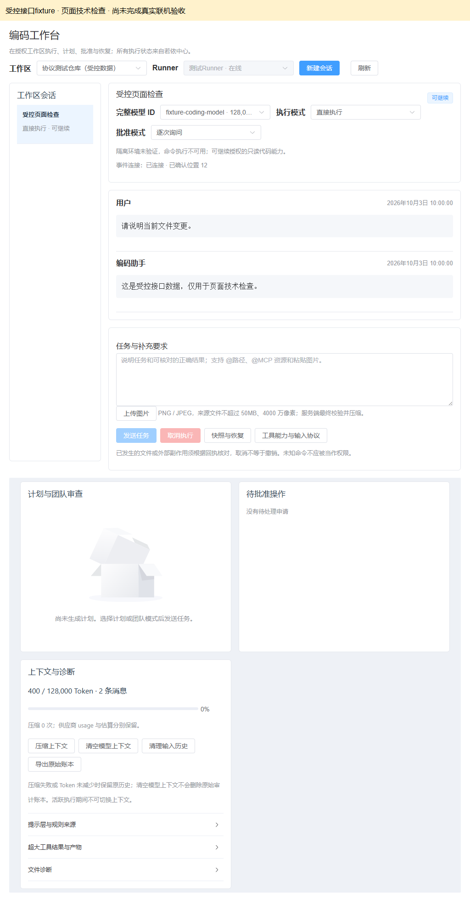
8. 异步知识结果与缺少元数据
本次新增检查：先等待PENDING回执再展示结果，缺少行号和哈希明确未上报。
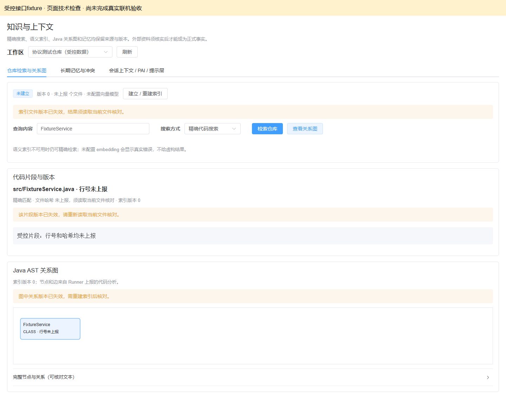
9. Windows隔离限制
本次新增检查：无核验提交按钮及写请求；保留命令执行不可用。
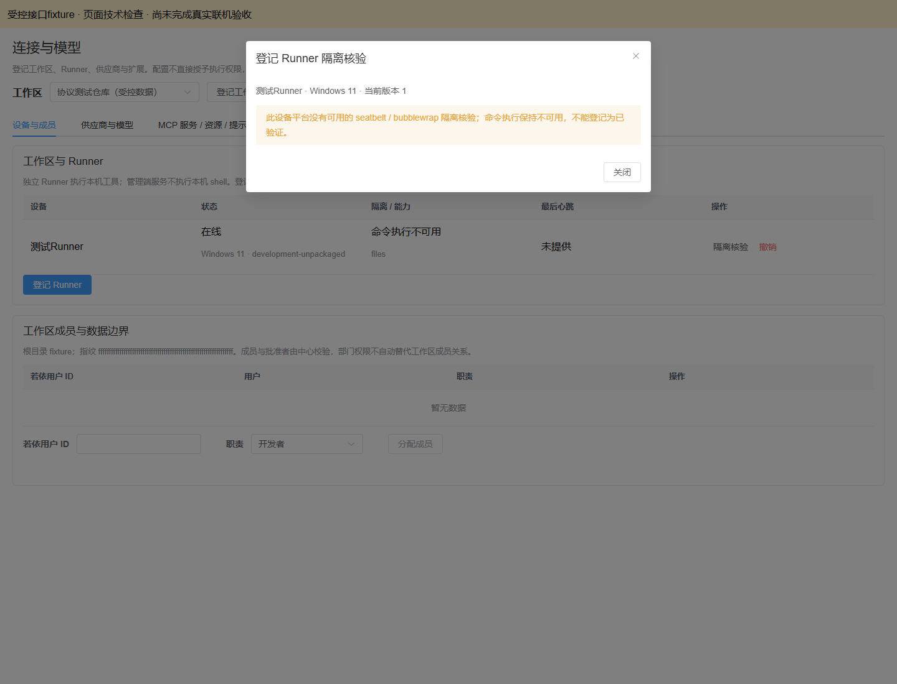
10. 历史导入只读
本次新增检查：历史会话无当前Runner，发送、文本/图片与上下文写操作禁用，未发送POST。

11. 从历史新建当前会话
本次新增检查：新建弹窗采用当前在线Runner和启用模型，不恢复旧任务或批准。
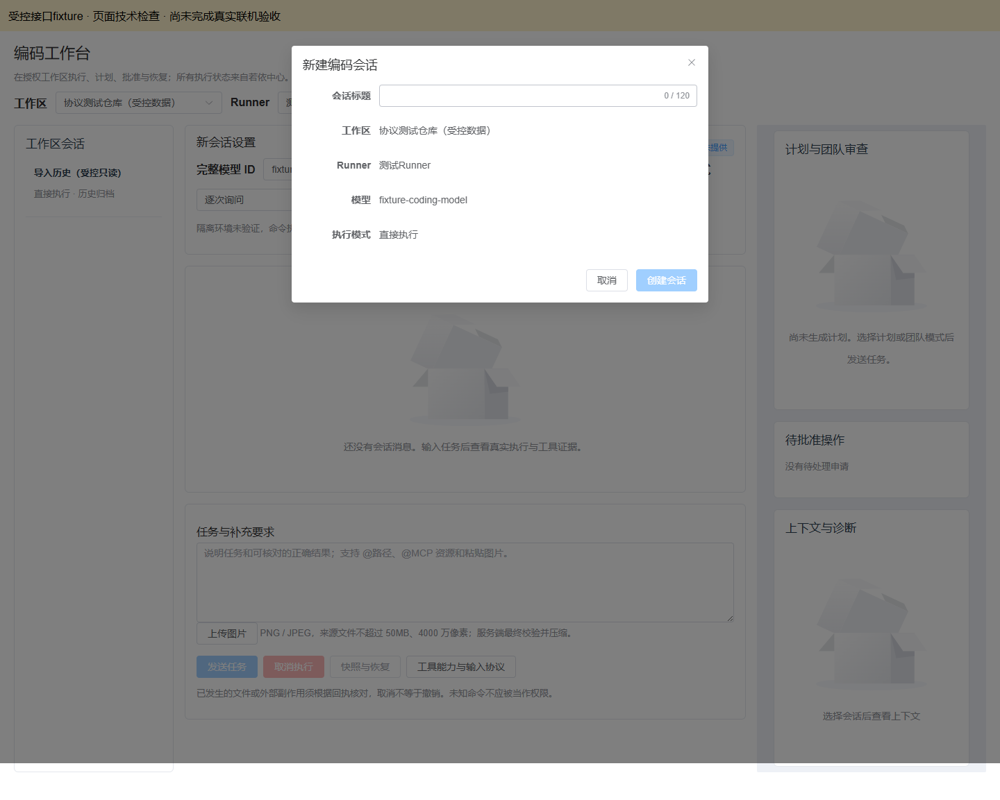
12. STDIO 托管引用登记
本次新增检查：环境凭据仅接受当前工作区引用，不填写原值；只打开与取消。
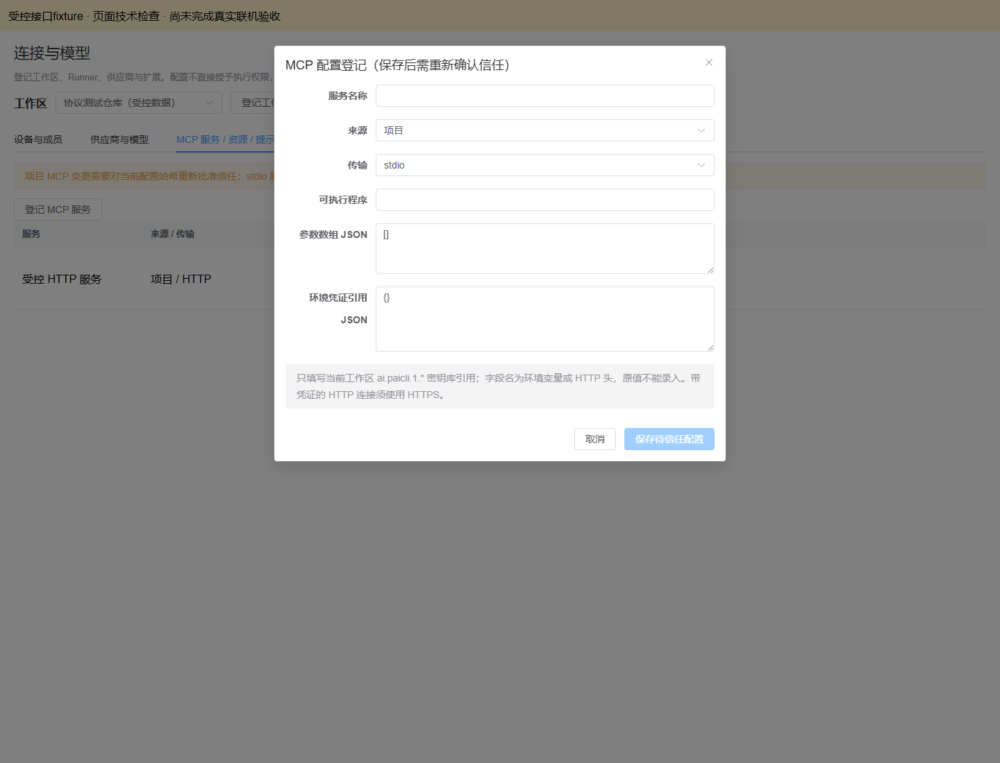
13. HTTP 托管引用编辑
本次新增检查：HTTPS地址、请求头引用与普通协议头正确展示；19个GET请求，无配置写入或连接。
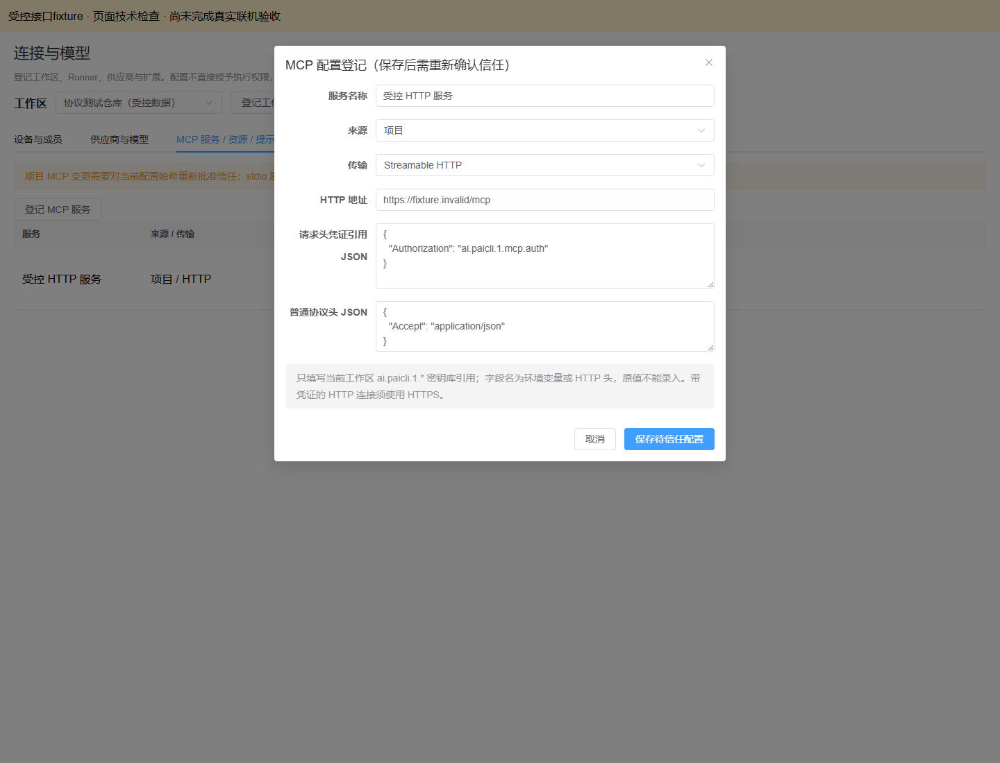
真实环境待准备
按完整迁移设计第5节准备真实业务清单、现有数据库迁移审核、受控密钥引用、设备绑定、有效命令隔离、模型/MCP/微信和正式评测环境，再执行真实联机验收。当前不把这些未执行项改记通过。